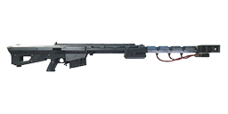
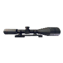
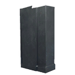
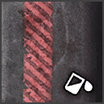
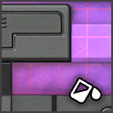
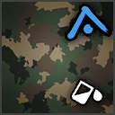

Damage by ammo and quality
The first table lists each ammo type the weapon can load. Damage is one projectile at the base value (Special quality), Armour and Comp. multiply it when the projectile hits an armour plate or a component, and Falloff is how the damage drops over distance. The second table works out one whole shot (damage × pellets × the quality multiplier) for every quality, at close range and before the difficulty setting.
| Ammo | Damage | Pellets | Armour | Comp. | Falloff / range |
|---|---|---|---|---|---|
.50 BMG Armor-Piercing Ammoequipment_ammo_50_ap_01 | 100 | 1 | ×2 | ×0.75 | none max 1,000 m |
.50 BMG Full Metal Jacket Ammoequipment_ammo_50_fmj_01 | 100 | 1 | ×1 | ×1.25 | none max 1,000 m |
| Ammo | Q1 | Q2 | Q3 | Q4 | Q5 | Q5 vs armour | Q5 vs components |
|---|---|---|---|---|---|---|---|
| .50 BMG Armor-Piercing Ammo | 50 | 62 | 75 | 88 | 100 | 200 | 75 |
| .50 BMG Full Metal Jacket Ammo | 50 | 62 | 75 | 88 | 100 | 100 | 125 |
| Quality | Dilapidated | Worn | Good | Exceptional | Special | Experimental |
|---|---|---|---|---|---|---|
| Damage multiplier | ×0.5 | ×0.62 | ×0.75 | ×0.88 | ×1 | ×1 |
- A Dilapidated copy does 50% of the damage of a Special one (×0.5 against ×1), so upgrading quality is a straight damage increase.
- Against armour plates, .50 BMG Armor-Piercing Ammo is best (×2 damage to armour).
- Against exposed components, .50 BMG Full Metal Jacket Ammo is best (×1.25 damage to components).
Experimental ammo of this calibre
The game files flag these rounds as experimental-only: they are for the experimental version. The column shows one shot at the experimental multiplier (×1).
| Ammo | Damage | Pellets | Armour | Comp. | Falloff / range | Effects |
|---|---|---|---|---|---|---|
.50 BMG Medical Ammo Exp. onlyequipment_ammo_50_beta_01_q6 | 0 | 1 | ×1 | ×1 | none max 1,000 m | Heals 40 (5 m) Medical rounds heal players near the impact; the pulse is healing, not damage. |
.50 BMG Explosive Ammo Exp. onlyequipment_ammo_50_alpha_01_q6 | 100 | 1 | ×1 | ×1 | none max 1,000 m | Special effect not included (it lives in a separate effect file). |
| Ammo | Q6 | Q6 vs armour | Q6 vs components |
|---|---|---|---|
| .50 BMG Explosive Ammo | 100 | 100 | 100 |
Rounds whose projectile does no damage and that heal (medical ammo) are left out of this table: see Effects for the heal.
Experimental versionExperimental Pvg 90

Experimental Pvg 90 is the Experimental version of this weapon. Its damage multiplier is ×1 (Special: ×1). Item ID 1135722230. See experimental weapons for how they work.
The game files give the experimental version its own versions of 2 ammo types. These replace the normal values when fired from it. The damage column is one shot at the experimental multiplier (×1).
| Ammo (change from normal) | Damage | Pellets | Q6 | Armour | Comp. | Effects |
|---|---|---|---|---|---|---|
.50 BMG Armor-Piercing Ammo (Railgun)equipment_ammo_50_railgun_ap_01damage 100 → 125 | 125 | 1 | 125 | ×2 | ×0.75 | – |
.50 BMG Full Metal Jacket Ammo (Railgun)equipment_ammo_50_railgun_fmj_01same as normal | 100 | 1 | 100 | ×1 | ×1.25 | – |
Attachments3 fit
Every attachment the item table lists as compatible with this weapon (its compatibility list contains the weapon's ToolID 19). Attachments have qualities of their own; vision modules come in one quality only.
| Attachment | Type | Qualities | Nickname | |
|---|---|---|---|---|
 | 6-12x Rifle Scope | Scopes | Q1 Q2 Q3 Q4 Q5 | 6-12x |
 | 8-16x Sniper Rifle Scope | Scopes | Q1 Q2 Q3 Q4 Q5 | 8-16x |
 | Pvg 90 Extended Magazine | Magazines | Q1 Q2 Q3 Q4 Q5 | 90M |
Augments24 of 28 fit
Augments go into slots that depend on quality. Following the in-game rules (as the Gen0 Editor applies them): Worn and Good weapons take one Primary augment, Exceptional and Special take a Primary and a Support augment, and Dilapidated and experimental weapons take none. A ✓ means the augment fits this weapon at that quality; the rules come from the game's equipment compatibility table (augments.json).
Primary augments
| Augment | Worn | Good | Exceptional | Special | Restriction | |
|---|---|---|---|---|---|---|
 | Acidic | ✓ | ✓ | ✓ | ✓ | – |
 | Adhesive Rounds | ✓ | ✓ | ✓ | ✓ | – |
 | EMP Detonation | ✓ | ✓ | ✓ | ✓ | – |
 | Health Stealing | ✓ | ✓ | ✓ | ✓ | – |
 | Machine Disarmer | ✓ | ✓ | ✓ | ✓ | – |
 | Prone Specialization | ✓ | ✓ | ✓ | ✓ | Melee weapons cannot use this augmentation. |
 | Rapid Reload | ✓ | ✓ | ✓ | ✓ | Melee weapons cannot use this augmentation. |
 | Scorching | ✓ | ✓ | ✓ | ✓ | Explosive weapons cannot use this augmentation. |
 | Sharpshooter | ✓ | ✓ | ✓ | ✓ | Melee weapons and explosive weapons cannot use this augmentation. |
 | Small Fryer | ✓ | ✓ | ✓ | ✓ | – |
 | Structure Destructor | ✓ | ✓ | ✓ | ✓ | – |
 | Titan Toppler | ✓ | ✓ | ✓ | ✓ | – |
 | Unstoppable Shells | ✓ | ✓ | ✓ | ✓ | Melee weapons and explosive weapons cannot use this augmentation. |
 | Uranium Infused | ✓ | ✓ | ✓ | ✓ | – |
Don't fit: Final Round (Only handguns can use this augmentation.); Trick Shot Master (Only shotguns and melee weapons can use this augmentation.)
Support augments
| Augment | Exceptional | Special | Restriction | |
|---|---|---|---|---|
 | Crouching Tiger | ✓ | ✓ | Melee weapons cannot use this augmentation. |
 | Hip Shooter | ✓ | ✓ | Melee weapons cannot use this augmentation. |
 | Hit and Run | ✓ | ✓ | – |
 | Oversized Magazine | ✓ | ✓ | Melee weapons and explosive weapons cannot use this augmentation. |
 | Quick Learner | ✓ | ✓ | – |
 | Scope Scout | ✓ | ✓ | Only weapons that can have a scope attached can use this augmentation. |
 | Skilled Spotter | ✓ | ✓ | – |
 | Slow and Steady | ✓ | ✓ | Melee weapons cannot use this augmentation. |
 | Sound Muffling | ✓ | ✓ | – |
 | Stabilization | ✓ | ✓ | Melee weapons cannot use this augmentation. |
Don't fit: Flurry of Blows (Only melee weapons can use this augmentation.); Power Attacker (Only melee weapons can use this augmentation.)
Skins4
Skins change only the look. All skins: weapon skins.

Artificial IntelligenceDLC Naval MarineDLC
Naval MarineDLC
Splash Freak CustomStarts locked
Woodland ResistanceDLCItem IDs
The item hash of each quality, as save editors and the Gen0 Editor use them. Each quality is a separate item in the game's item table.
| Quality | Item ID | Icon |
|---|---|---|
| Dilapidated | 2727348298 |  |
| Worn | 1113029778 | |
| Good | 1708071827 | |
| Exceptional | 1940676808 | |
| Special | 1287668466 | |
| Experimental | 1135722230 |
Where to find it
The world files place 21 copies of the Pansarvärnsgevär 90 at fixed spots (on top of the random weapon crates). Each spot has a fixed quality; this table counts them by region.
| Region | Dilapidated | Worn | Good | Exceptional | Total |
|---|---|---|---|---|---|
| Archipelago | – | 3 | – | – | 3 |
| South Coast | – | 1 | – | – | 1 |
| Farmlands | 1 | 2 | 5 | – | 8 |
| Forest | – | 1 | 1 | – | 2 |
| Marshlands | – | 1 | – | – | 1 |
| North Coast | – | – | – | 1 | 1 |
| Himfjäll (Alpine Unrest) | – | 2 | 3 | – | 5 |
| Total | 1 | 10 | 9 | 1 | 21 |
The map opens on part of the 21 spots; zoom out (−) or drag to see the rest, use the table, or open the full map.
Every spot, with the nearest named map location and its distance. Coordinates are the game's world x / z, as on the interactive map.
Ammo and related weapons
Ammo it loads: .50 BMG Armor-Piercing Ammo, .50 BMG Full Metal Jacket Ammo.
Experimental-only rounds (for the experimental version): .50 BMG Medical Ammo, .50 BMG Explosive Ammo.
Other sniper rifles: Kotenok Sniper Rifle, S21.